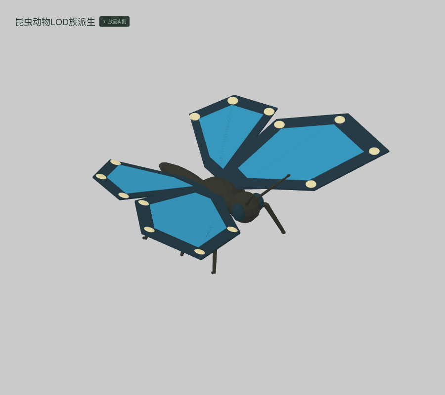

<!doctype html><meta charset="utf-8"><style>*{box-sizing:border-box}body{margin:0;background:#dfe1dd;color:#273d34;font:18px system-ui,'PingFang SC'}header{padding:26px 36px}h1{font-size:30px;margin:0 0 10px}main{display:grid;grid-template-columns:repeat(4,1fr)}figure{margin:0;border:1px solid #b7c0b6;background:#d4d8d1}img{display:block;width:100%}figcaption{padding:13px 22px 18px;font-size:19px}small{display:block;font-size:13px;margin-top:5px}footer{padding:24px 36px}</style><header><h1>云山 · M066 · 参数变体 · 12 件三维候选</h1>真实编辑器截图 · 基础块件与连续网格 · 不使用 AO / 辉光</header><main><figure><figcaption><b>CHAR-363 鱼类动物LOD族派生</b><small>母版参数变体 · 1 实例 · 10 体素格 · 实际边界 0.22 × 0.21 × 0.59 m</small></figcaption></figure><figure><figcaption><b>CHAR-364 昆虫动物LOD族派生</b><small>母版参数变体 · 1 实例 · 8 体素格 · 实际边界 0.15 × 0.05 × 0.10 m</small></figcaption></figure><figure><figcaption><b>ENV-007 崖壁内外转折与台阶边缘族</b><small>母版参数变体 · 1 实例 · 4 体素格 · 实际边界 16.00 × 18.00 × 12.00 m</small></figcaption></figure><figure><figcaption><b>ENV-018 破岩形状与干湿色尺寸族</b><small>母版参数变体 · 1 实例 · 2 体素格 · 实际边界 4.65 × 7.82 × 5.12 m</small></figcaption></figure><figure><figcaption><b>ENV-033 瀑宽流量与分帘形态族</b><small>母版参数变体 · 1 实例 · 2 体素格 · 实际边界 24.00 × 153.00 × 0.28 m</small></figcaption></figure><figure><figcaption><b>ENV-051 既有乔木色阶与高度族</b><small>母版参数变体 · 1 实例 · 19,531 体素格 · 实际边界 11.80 × 16.00 × 11.20 m</small></figcaption></figure><figure><figcaption><b>ENV-058 幼树低枝与小冠尺寸族</b><small>母版参数变体 · 1 实例 · 14 体素格 · 实际边界 8.91 × 7.43 × 8.65 m</small></figcaption></figure><figure><figcaption><b>ENV-075 干旱污染与恢复植被状态族</b><small>母版参数变体 · 1 实例 · 2,285 体素格 · 实际边界 5.20 × 3.20 × 4.40 m</small></figcaption></figure><figure><figcaption><b>ENV-083 挡墙转角高差与端头族</b><small>母版参数变体 · 1 实例 · 3,976 体素格 · 实际边界 8.00 × 2.40 × 2.80 m</small></figcaption></figure><figure><figcaption><b>LIFE-033 办公桌尺寸与材质变体</b><small>母版参数变体 · 1 实例 · 90,765 体素格 · 实际边界 1.40 × 0.76 × 0.70 m</small></figcaption></figure><figure><figcaption><b>LIFE-034 茶几尺寸与材质变体</b><small>母版参数变体 · 2 实例 · 68,752 体素格 · 实际边界 1.10 × 0.47 × 0.62 m</small></figcaption></figure><figure><figcaption><b>LIFE-035 床型与寝具配色变体</b><small>母版参数变体 · 4 实例 · 378,766 体素格 · 实际边界 1.63 × 1.00 × 2.10 m</small></figcaption></figure></main><footer>每格独立适配画幅，各模板不共用同一比例尺。几何候选，尚未通过人工美术验收。原生体素与连续网格分别保存和导出。</footer>